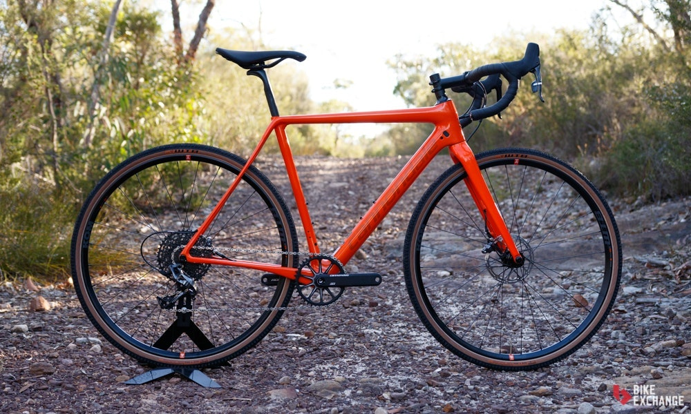

Bicicletas de Cyclocross

Hechas para competir en el deporte con el que comparten nombre. Sus primeras competencias se realizaron en Europa, eran la manera en que los ciclistas de ruta se mantenían en forma durante el invierno, sin embargo, hoy en día esta modalidad se esparció por todo el mundo y tiene millones de fanáticos por mérito propio. A este origen le deben su apariencia similar a las bicicletas de ruta, con la diferencia de sus llantas más gruesas para maximizar el agarre, sus cambios más bajos para incrementar la fuerza, y que tanto su marco como sus frenos están diseñados para sumergirse en la mugre sin problemas, estas características las hacen el punto medio perfecto entre las bicicletas de ruta y las de montaña. Y por tanto, las hace una opción excelente no solo para quien quiera competir en ciclocross; quienes quieran montar sobre terrenos destapados, en vías rurales, para la aventura, o usarlas como medio de transporte también tendrán una opción que se ajuste a sus necesidades.
Cuadro
Su geometría suele tener un tubo superior inclinado para permitir a la o al ciclista flexionar las rodillas y tener un mejor control durante los brincos de un camino irregular. La diferencia con respecto a los cuadros de MTB es que tanto la horquilla como las vainas tienen mayor holgura para soportar las ruedas más anchas. Los cuadros se pueden encontrar fabricados en aluminio o en fibra de carbón y es posible encontrar algunos fabricados en acero cromoly. Los cuadros pueden contar o no con suspensión.
Manubrio/manillar
A fin de tener un buen control y una buena visibilidad en caminos irregulares, las fat bikes utilizan manubrios rectos o de doble altura. Este tipo de manubrios permiten una postura semi-erguida ideal para este tipo de caminos.
Ruedas
Hoy en día la gran mayoría de las ruedas de las fat bikes están construidas con mazas de 170mm (otras medidas usadas: 160mm, 165mm y 190mm). Los aros usualmente son de 26″ y suelen tener de 35 – 103mm de ancho. Regularmente las llantas son de 64 – 130mm y al estar ideadas para usarse en terrenos sueltos tienen dibujos con tacos para mejorar la tracción. Al usar llantas/cubiertas tan anchas pueden ser infladas a presiones bajas, normalmente entre 5 – 30 PSI.
Velocidades
Estas bicicletas están equipadas con rangos de velocidades amplios, con relaciones más bien bajas. Esto les da la capacidad de enfrentar cualquier tipo de terreno, especialmente si se trata de terrenos sueltos llenos de troncos y rocas sueltas. Normalmente cuentan con 2 a 3 platos y 8 a 9 piñones, aunque se pueden encontrar con cassettes de hasta 11 pasos.